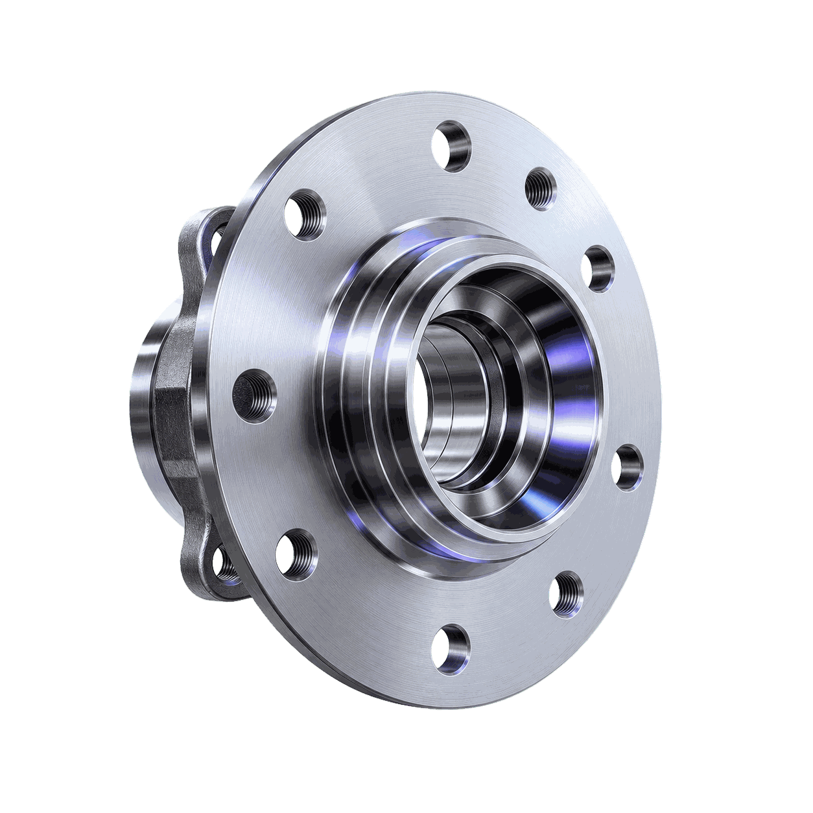
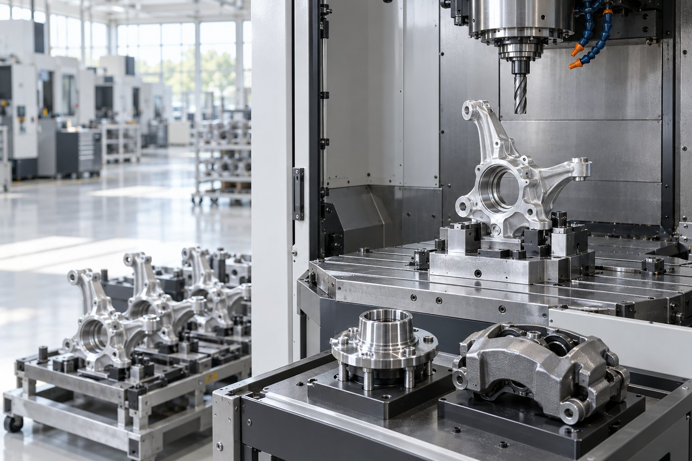
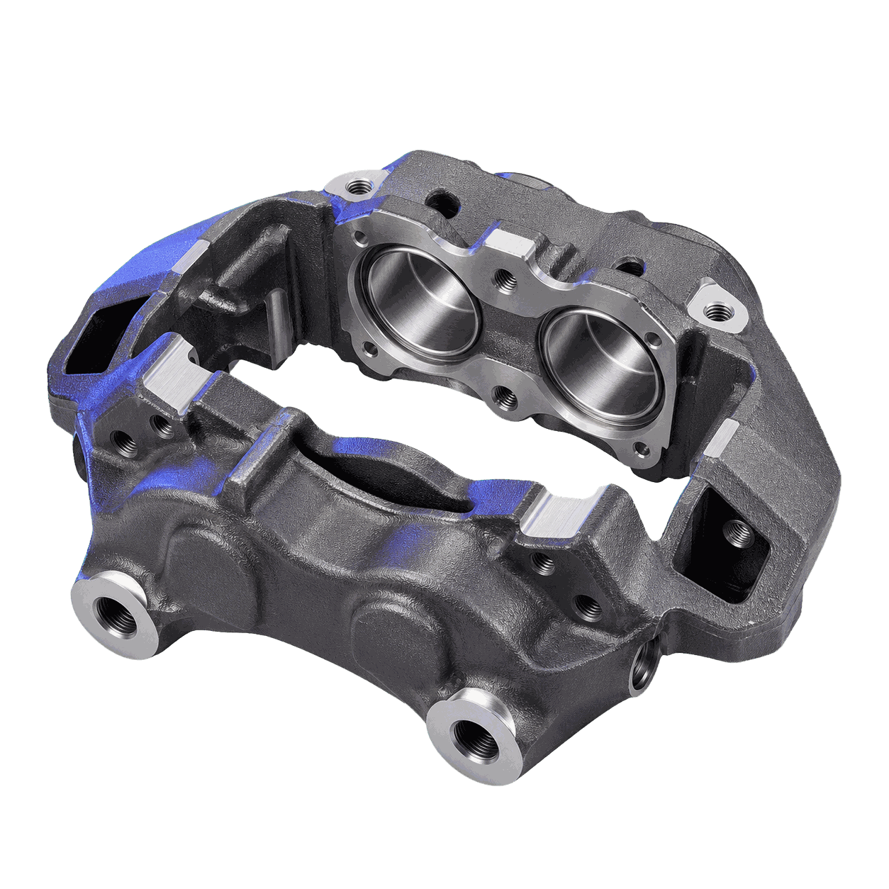
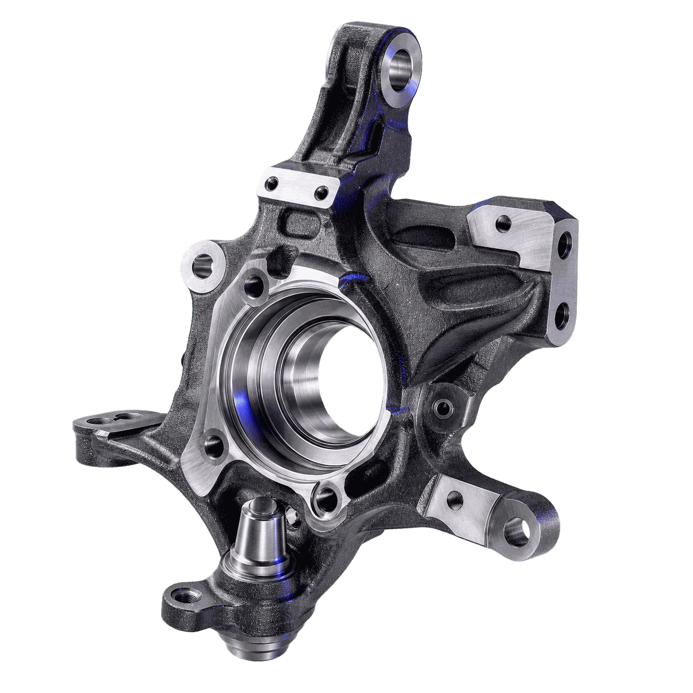
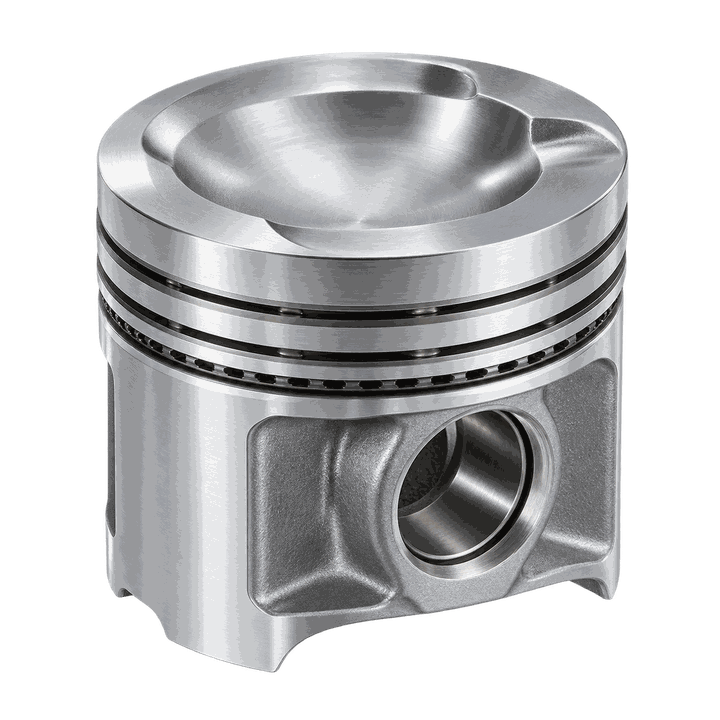
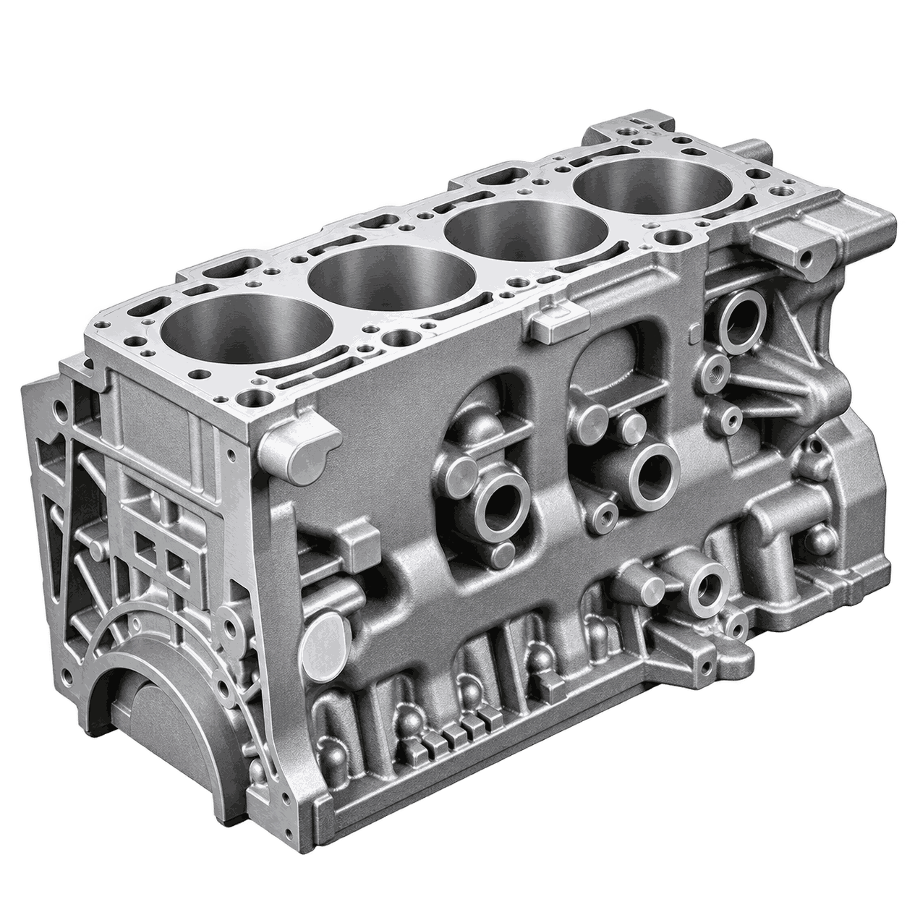
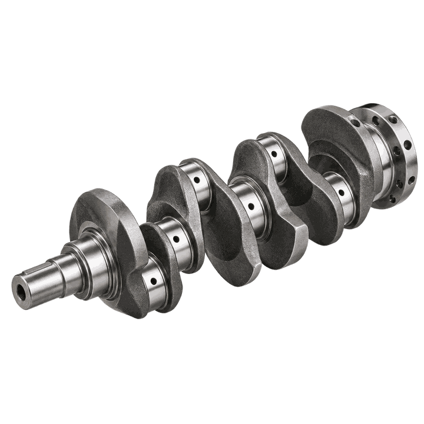
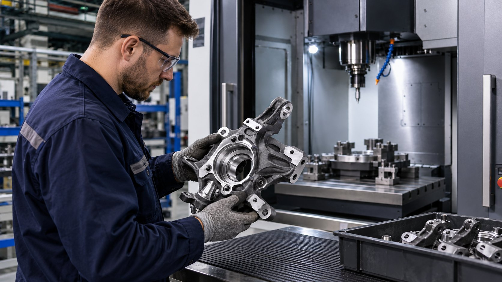
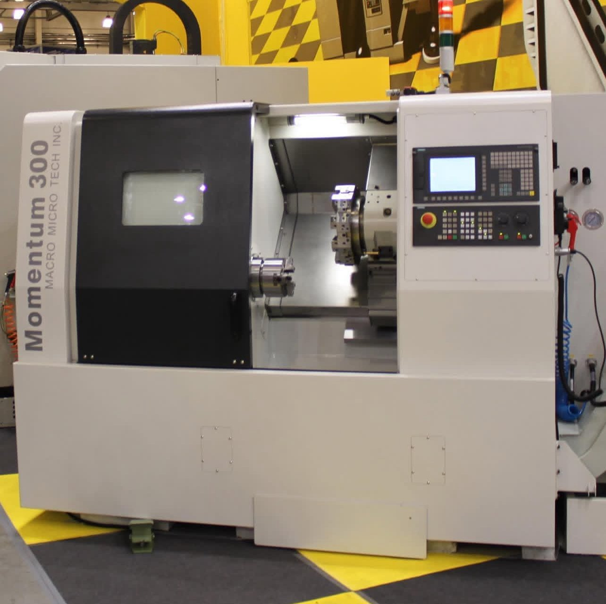

Ступица колеса
Технологическая задача
Обеспечить точность посадочных диаметров, соосность и чистоту рабочих поверхностей под подшипник и ступичный фланец.

Комплексные технологические решения для серийной обработки автомобильных деталей: от тел вращения до корпусных узлов с точными посадками и отверстиями.

Обеспечить точность посадочных диаметров, соосность и чистоту рабочих поверхностей под подшипник и ступичный фланец.

Обеспечить точность базовых плоскостей, посадочных отверстий и сопрягаемых поверхностей детали «Тормозной суппорт».

Построить маршрут обработки детали «Поворотный кулак» с понятным разделением операций и подбором оборудования под каждую операцию.

Построить маршрут обработки детали «Поршень» с понятным разделением операций и подбором оборудования под каждую операцию.

Обеспечить точность базовых плоскостей, посадочных отверстий и сопрягаемых поверхностей детали «Блок цилиндров».

Обеспечить соосность шеек, стабильную геометрию детали «Коленвал» и чистоту рабочих поверхностей.
Реальные запуски оборудования на производствах: что поставили, как вводили в эксплуатацию, что получил заказчик.

Внедрения · 22.07.2026Запуск вертикально-фрезерного оборудования для производства автомобильных компонентовЧитать → Внедрения · 26.07.2026Запуск вертикального обрабатывающего центра: чек-лист ввода в эксплуатациюЧитать →
Внедрения · 26.07.2026Запуск вертикального обрабатывающего центра: чек-лист ввода в эксплуатациюЧитать →
Внедрения · 26.12.2025Запуск токарного центра с ЧПУ: как перейти от монтажа к стабильному производствуЧитать →Как проходит проект от чертежа до серии — шесть шагов. Нужен участок целиком — комплексное оснащение.
Автокомпоненты — это серийное производство с жёсткими допусками: ступицы, тормозные диски и суппорты, поворотные кулаки, поршни, блоки цилиндров, коленчатые и распределительные валы. Партии — от тысяч до сотен тысяч штук в год, поэтому главное требование к станку — повторяемость размеров от первой детали до последней и время цикла, которое укладывается в такт линии. Материалы — чугун, конструкционные и легированные стали, алюминиевые сплавы.
Технолог Механита подбирает станок под деталь и такт: чертёж, материал, годовая программа — на выходе маршрут по операциям, типоразмер и оснастка. Перед поставкой можно сделать тестовую обработку детали заказчика и получить протокол измерений. Пусконаладка на площадке, инструктаж операторов, гарантия от 12 месяцев и выезд инженера за 1–2 рабочих дня — раздел «Сервис». Станки в наличии на складе в Нижнем Новгороде — «В наличии».
Пришлите чертёж и требования — технолог Механита разберёт задачу, составит маршрут обработки и подберёт станок под вашу программу выпуска.
Предварительный анализ — без оплаты.